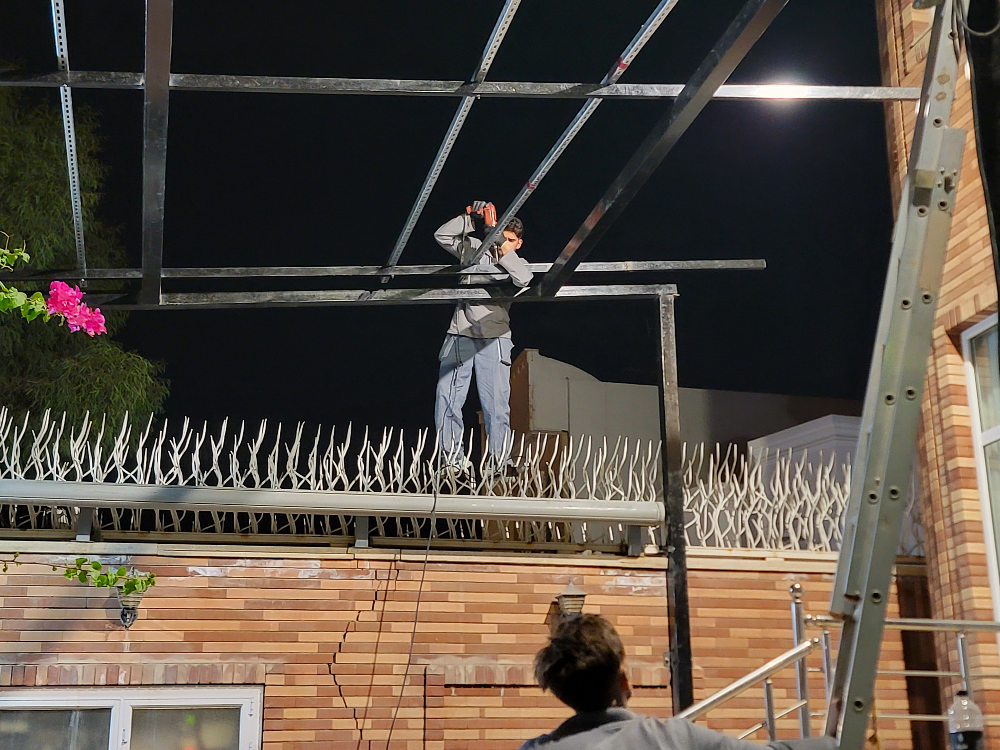
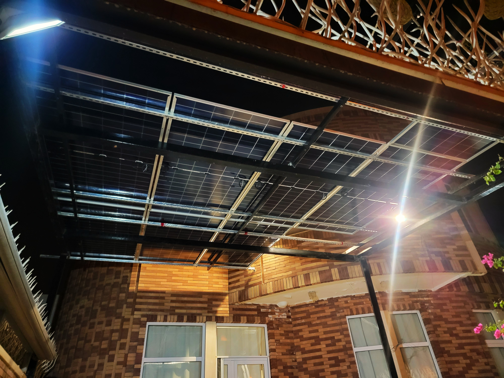

معرفی پروژه
این پروژه در شهر یزد، بلوار جمهوری، برای یک واحد مسکونی اجرا شده است. مالک ساختمان به دنبال راهحلی بود تا هم از خودروی خود در برابر تابش مستقیم و شدید نور خورشید در کویر یزد محافظت کند و هم بتواند از این سازه برای تولید برق مورد نیاز ساختمان استفاده کند. به همین دلیل، تیم برقآوران هوراد طراحی و ساخت یک سایهبان فلزی مقاوم را به همراه نصب پنلهای خورشیدی بر روی آن انجام داد.
هدف از اجرای این پروژه، تأمین برق مورد نیاز ساختمان به صورت مستقل از شبکه سراسری بود. با توجه به موقعیت جغرافیایی یزد و میانگین بالای ساعات آفتابی در این شهر (به طور متوسط بیش از ۳۰۰ روز آفتابی در سال)، استفاده از انرژی خورشیدی به عنوان یک راهکار عملی و اقتصادی برای تأمین برق پایدار در نظر گرفته شد. همچنین با توجه به قطعیهای مکرر برق در منطقه و افزایش هزینههای مصرف انرژی، اجرای این سیستم میتوانست در بلندمدت به کاهش قابل توجه هزینههای انرژی منجر شود.
یکی از نیازهای ویژه مالک ساختمان، شارژ خودروی پلاگین هیبرید خود در خانه بود. با توجه به اینکه خودروهای برقی و هیبریدی نیاز به شارژ منظم دارند، وجود یک سیستم خورشیدی با ذخیرهسازی باتری میتوانست این نیاز را به صورت رایگان و مستقل از شبکه تأمین کند.

مشخصات فنی پروژه
سیستم طراحی شده برای این پروژه از نوع Off-Grid است. این سیستم شامل ۱۳ عدد پنل خورشیدی ۶۲۰ وات از برند Jinko میشود که بر روی سقف سایهبان ساختهشده نصب شدهاند. پنلهای Jinko به دلیل کیفیت بالا، راندمان مناسب و گارانتی معتبر، یکی از گزینههای اصلی برای پروژههای خورشیدی در ایران هستند.
برای ذخیرهسازی انرژی، دو عدد باتری لیتیومی ۵ کیلوواتی از برند Marsriva در کنار اینورتر Growatt قرار گرفتهاند. باتریهای Marsriva از نوع لیتیوم آهن فسفات (LiFePO4) هستند که به دلیل طول عمر بالا، ایمنی مناسب و عمق دشارژ قابل قبول، انتخاب مناسبی برای این پروژه محسوب میشوند.
اینورتر Growatt نیز با قابلیت مدیریت هوشمند انرژی، امکان شارژ و دشارژ باتریها را بهینهسازی میکند و میتواند در صورت نیاز، برق شبکه را به عنوان منبع پشتیبان در نظر بگیرد.
برای شارژ خودروی پلاگین هیبرید مالک، یک پریز مخصوص شارژ خودرو در نزدیکی سایهبان نصب شده است که از طریق برق تولیدی پنلها و ذخیرهشده در باتریها تغذیه میشود. این امکان باعث شده است تا مالک بتواند خودروی خود را به صورت کامل با انرژی خورشیدی شارژ کند.


مراحل اجرا
اجرای این پروژه در مجموع دو هفته به طول انجامید. هر مرحله با برنامهریزی دقیق و هماهنگی با مالک ساختمان پیش رفت.
بازدید از محل، اندازهگیری ابعاد حیاط و تعیین بهترین موقعیت برای ساخت سایهبان. طراحی سازه فلزی متناسب با نیاز مالک و شرایط محل. محاسبه دقیق میزان تابش خورشید در منطقه با استفاده از دادههای هواشناسی یزد. تعیین بهترین چیدمان برای پنلها به منظور دریافت حداکثر تابش. بررسی نیازهای شارژ خودروی پلاگین هیبرید و تعیین ظرفیت اضافی مورد نیاز برای این منظور. طراحی کامل سیستم و انتخاب تجهیزات. ساخت سازه سایهبان در کارگاه و آمادهسازی برای حمل به محل پروژه.
خرید و تأمین پنلهای Jinko، باتریهای Marsriva و اینورتر Growatt. انجام تستهای اولیه بر روی تجهیزات پیش از حمل به محل پروژه. حمل تجهیزات و سازه سایهبان به یزد با هماهنگی تیم لجستیک.
نصب سازه سایهبان در حیاط، نصب پنلها بر روی سقف سایهبان، اتصال باتریها و اینورتر، انجام سیمکشیهای لازم و اجرای سیستم اتصال زمین. نصب پریز مخصوص شارژ خودرو در نزدیکی سایهبان و اتصال آن به سیستم. تست و راهاندازی نهایی سیستم.


چالشهای اجرایی
در طول اجرای این پروژه، چند چالش عمده وجود داشت که تیم اجرایی با برنامهریزی مناسب توانست آنها را پشت سر بگذارد:
- ساخت و نصب سازه سایهبان: با توجه به وزن پنلها و نیاز به مقاومت در برابر باد و شرایط آبوهوایی یزد، سازه سایهبان باید با استحکام کافی طراحی و ساخته میشد. تیم اجرایی با استفاده از پروفیلهای فلزی مناسب و جوشکاری دقیق، سازهای مقاوم و پایدار را در کارگاه ساخت و سپس در محل پروژه نصب کرد.
- وزن و حمل پنلها: پنلهای ۶۲۰ واتی Jinko وزن قابل توجهی (حدود ۳۰ کیلوگرم هر عدد) دارند و حمل ۱۳ عدد از آنها به بالای سایهبان که ارتفاع آن حدود ۳ متر بود، نیازمند نیروی انسانی کافی و تجهیزات ایمنی مناسب بود. تیم اجرایی برای جلوگیری از آسیب به پنلها و حفظ سلامت کارگران، این کار را با سرعت پایین و با استفاده از تسمههای مخصوص حمل پنل انجام داد.
- سیمکشی و مسیریابی کابلها: فضای موجود در محل نصب اینورتر و باتریها محدود بود و عبور سیمها از کنار سازه سایهبان و داخل کانالهای موجود نیازمند برنامهریزی دقیق و رعایت استانداردهای فنی بود. مسیریابی سیمها چند بار اصلاح شد تا از ایجاد فشار و کشش اضافی روی کابلها جلوگیری شود.
- سیستم اتصال زمین (ارت): برای اجرای سیستم ارت استاندارد، به مایع الکترولیت و الکترودهای مسی مناسب نیاز بود که تهیه آنها در یزد با تأخیر مواجه شد. با توجه به اینکه سیستم Off-Grid به اتصال زمین ایمن نیاز دارد، تیم اجرایی ناچار شد تا زمان بیشتری را برای تأمین تجهیزات ارت صرف کند.
نتیجه و دستاوردها
سیستم خورشیدی Off-Grid با موفقیت راهاندازی شد و هماکنون تأمین برق ساختمان را به صورت کامل انجام میدهد. با اجرای این پروژه، ساختمان به طور کامل از شبکه برق سراسری مستقل شده است و مالک ساختمان از مزایای زیر بهرهمند شده است:
- تأمین برق پایدار: ساختمان دیگر به شبکه سراسری وابسته نیست و قطعیهای برق تأثیری بر عملکرد آن ندارد.
- حذف هزینههای قبض برق: با تولید برق مورد نیاز از طریق سیستم خورشیدی، مالک ساختمان دیگر قبض برق پرداخت نمیکند.
- شارژ رایگان خودرو: خودروی پلاگین هیبرید مالک به صورت کامل با انرژی خورشیدی شارژ میشود و هزینه سوخت آن به صفر رسیده است.
- استفاده از انرژی پاک و تجدیدپذیر: با تولید برق از انرژی خورشیدی، میزان انتشار کربن کاهش یافته و مصرف سوختهای فسیلی به حداقل رسیده است.
- استفاده بهینه از فضای موجود: سازه سایهبان که برای محافظت از خودرو ساخته شده بود، حالا به یک نیروگاه تولید برق تبدیل شده است و از فضای موجود به بهترین شکل استفاده شده است.

با بهرهبرداری از این سیستم، مالک ساختمان توانسته است ضمن کاهش هزینههای انرژی، به استقلال انرژی دست یابد و از مزایای یک سیستم خورشیدی پایدار بهرهمند شود. بر اساس محاسبات انجام شده، این سیستم قادر است بیش از ۹۰ درصد از نیاز برق سالانه ساختمان را تأمین کند و در سالهای آینده نیز با کاهش راندمان جزئی پنلها، همچنان عملکرد مناسبی خواهد داشت.